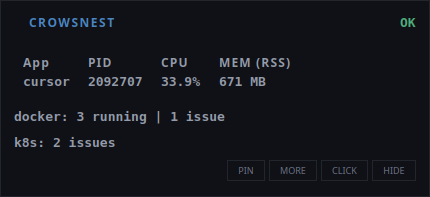
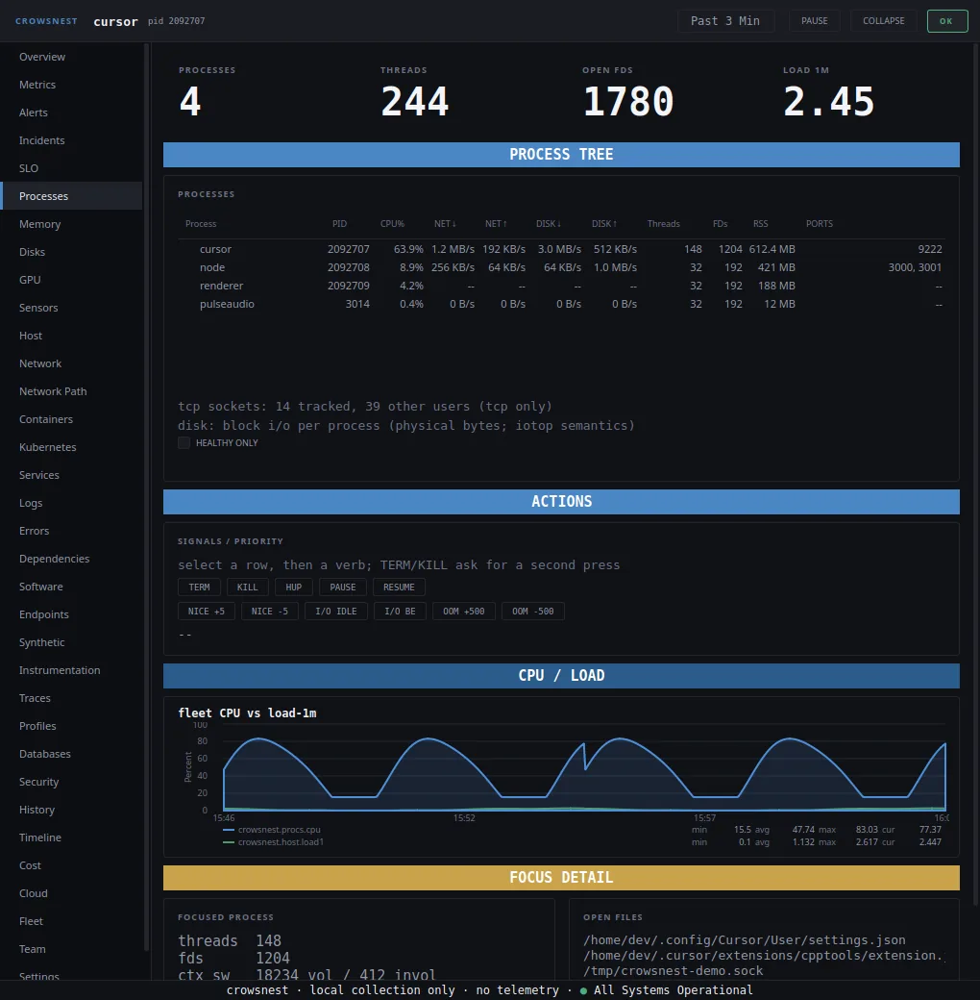
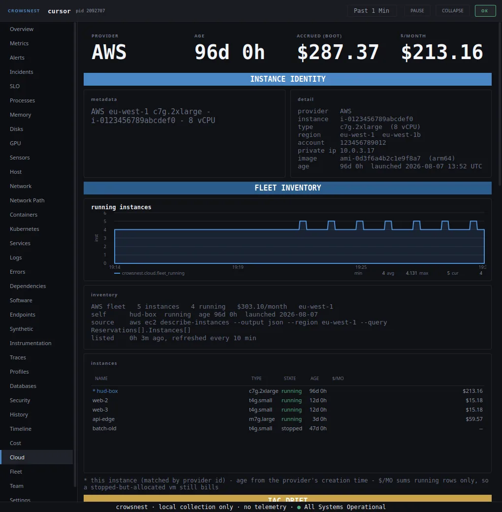
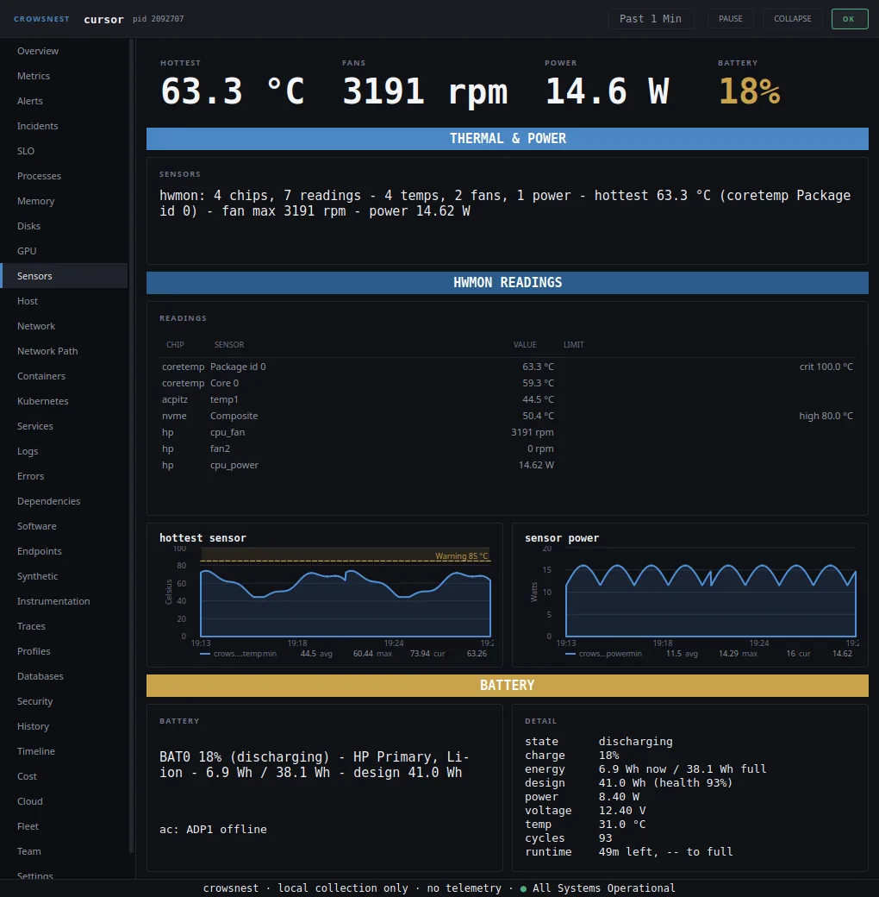

The strip
430 pixels, always on top, refreshed every second. It follows the app in front of you, not the one you pinned.
Local-first HUD · Linux, macOS, Windows
Pick any window and Crowsnest puts that app's CPU, memory, threads, disk and network in a 430px strip that stays on top. One click opens the full console for the host, containers, cluster and cloud bill.
Free forever·Team $9 a month·14-day trial, no card
What it is
Two views, one binary. The overlay follows the window you are in; the console is everything the box can tell you. The relay is optional, for when one laptop is not enough.

430 pixels, always on top, refreshed every second. It follows the app in front of you, not the one you pinned.

34 views from the process tree to the host, containers, Kubernetes, traces and cloud cost. No account required.

Optional Team half: shared fleet state, incident queue and delivery that outlive a closed laptop.
Free and paid
The desktop app is the whole app: every view, no account, no telemetry, no licence check. Team adds a relay you run, so fleet state survives the laptop closing. One price per workspace.
The complete desktop app, MIT licensed.
or $90 a year — $7.50 a month, two months free. One price per workspace.
Every machine that reports, with silence detection, duplicate detection and pre-registration. The desktop Team page shows the same rows the browser does — and a silent machine is a dash, never a stale reading.
Threshold and composite rules over stored rollups, dependency and flap suppression, folding, and acknowledge, close and silence with an audit trail. The server is the truth both the browser and the desktop read.
Email, webhook (the Alertmanager v4 body with an HMAC), Slack, PagerDuty, Opsgenie, Discord and Teams, driven by a routing tree with escalation steps and an on-call rota. A retry ladder and a dead letter queue; every send is one ledger row.
Retention is stated and enforced by one function. Export is streamed as the desktop client's own CSV dialect or JSON. Delete is a real delete with a counts receipt.
[remote] is off until you switch it on.[remote] enabled = true url = https://relay.example.com token = the-machine-token
[remote] actions turns on the desktop verbs — acknowledge, close and a 30-minute silence from the Team page. Reading is on with the link alone.
[remote] ships in the free build off by default, there is no licence check anywhere, and the report payload never carries process lists, command lines, environment, paths or logs — the schema refuses them and the field list documents every byte.Managed hosting is not open yet: the relay is one static binary you run beside Postgres on your own server. The 14-day trial starts the day that relay begins serving your workspace, and the relay binary is MIT.
Screenshots
A 12-core HP laptop running Linux, with three Docker containers, a local PostgreSQL, a single-node Kubernetes cluster, and local OTLP and DogStatsD clients feeding the console. Click any panel for the full frame.


These are live captures, not mock-ups. The Cloud panel is a live capture against a local AWS emulator; the notes are in the FAQ and the repository.
Get started
Nothing starts until you do. Pick your OS, copy the line, and the installer puts crowsnest on your PATH.
$ curl -fsSL https://raw.githubusercontent.com/codeafridi/Crowsnest/main/install.sh | shInstalls for your user only and puts crowsnest on PATH. Nothing is started; run crowsnest to launch it, or re-run the installer with --autostart to also start it at login. Runs on Ubuntu, Debian, Fedora, Arch, openSUSE, Alpine and other 64 bit distros with glibc 2.34 or newer. No curl? The installer falls back to wget, busybox, or your package manager.
Prefer a package file? Download the .deb or the AppImage from Releases. The AppImage updates itself over zsync.
$ curl -fsSL https://raw.githubusercontent.com/codeafridi/Crowsnest/main/install.sh | shDownloads the latest DMG, copies the app into Applications and adds the crowsnest command. Nothing is started; re-run with --autostart for login autostart. Needs macOS 12 Monterey or newer. No permissions asked, and the installer clears Gatekeeper for you.
Prefer a package file? Download the DMG from Releases. TCP health is gated on macOS: the kernel will not hand those counters to an unprivileged reader, and the panel says so.
PS> irm https://raw.githubusercontent.com/codeafridi/Crowsnest/main/cpp/packaging/windows/install.ps1 | iexOpen PowerShell, paste the line, done. Installs into your user folder and puts crowsnest on PATH. Nothing is started; add -Autostart if you want start at login. Needs Windows 10 or newer. No Git Bash required.
Prefer a setup wizard? Download the MSI from Releases. SmartScreen may ask once, choose Run anyway.
After install: crowsnest to run it, crowsnest status to check it, crowsnest stop to quit it, crowsnest update to upgrade, and crowsnest serve to run the headless collector on a display-less fleet member.
FAQ
Yes. The desktop app is MIT with no account, no telemetry, no licence check and no feature gate. Every one of the 34 views ships in the free build. Local telemetry is never metered, and there is nothing to buy to use it.
Shared state that outlives a closed laptop: a relay that holds the fleet view, the incident queue, the on-call rota and the alert delivery while machines sleep or reboot. $9 a month or $90 a year, 14-day trial, no card. The desktop app itself is never gated — turning [remote] on is the entire upgrade. Pricing and limits.
The day a relay you run begins serving your workspace — not when you sign up. It runs 14 days, needs no card, and carries the full Team limits.
Cancellation keeps the plan to the end of the period, then data is kept 30 days before a counted delete with a receipt. A lapsed payment gives 7 days of grace: read-only by day 7, cancelled by the pass on day 8. Restore inside the window and nothing is lost.
Linux, macOS and Windows from the same codebase. Collection depth differs by what each OS will hand an unprivileged process, and the console names every gap instead of showing a blank: macOS redacts TCP counters without root, Windows has no load average, cgroups and PSI pressure are Linux surfaces, per-process socket rates need Linux. What works on your OS is listed in Settings, per surface.
By default, nothing. The outbound calls are all opt-in and all yours: the cloud metadata read for instance identity, your own webhook, your own Prometheus scraper, and [remote] reporting if you link a Team relay. Even then the payload never carries process lists, command lines, environment, paths or logs — the schema refuses them and the field list documents every byte.
crowsnest update stops the running HUD, fetches the latest release bundle and swaps it in. The AppImage updates itself over zsync, and the .deb, DMG, MSI and portable zip are on the Releases page if you prefer to install by hand.